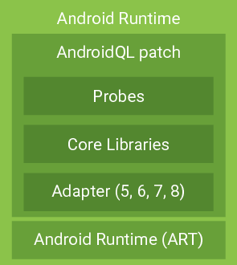

代码结构说明 (aql-vm 部分)¶
我们使用 aql-vm 来简称 AndroidQL 中修改 Android Runtime 虚拟机的部分。下面将介绍 aql-vm 的代码结构，以及对一些代码进行说明。
代码结构¶
AndroidQL 可以看作是对 AOSP (Android Open Source Project) 的一个 patch，增加了测试和分析的功能。而这些 patch 又集中在 AOSP 的 Android Runtime (ART) 部分。它的代码结构可以用下图表示：

我们已经知道，AOSP 源代码中 art 目录下是 Android Runtime 代码，而 AndroidQL 的代码集中在 art/runtime/aql 目录下。AndroidQL 项目的文件组织为：
art
└── runtime
└── aql
├── adapter
├── core
└── probe
adapter, core, probe 三个目录分别对应上图中的三层代码结构。
Adapter¶
Android 不同版本间的一些 API 略有不同。Adapter 对 Android 5, 6, 7, 8 的一些不同的 API 进行了封装，对上层提供统一的接口。详细内容请参考 AndroidQL 如何兼容不同的 AOSP 版本。
Core library¶
- 定义 AndroidQL 通信过程中的数据结构，并维护连接状态
- 支持 JSON 数据结构的解析
- 对 SQLite 数据库接口的封装，提供建表、插入、删除数据等操作
Probes¶
这里定义了一系列的 probe。AndroidQL 的每一项具体功能都由 probe 实现。